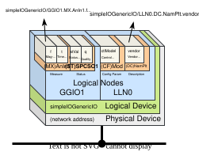
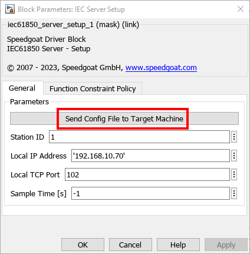

IEC 61850 Usage Notes
IEC 61850 Usage Notes — Detailed information about the IEC 61850 protocol and the native IEC 61850 blockset
Introduction to IEC 61850
IEC 61850 is a standard about Ethernet communication protocols mostly used for intelligent electronic devices (IEDs) in electrical substations. The three defined protocols are: Manufacturing Message Specification (MMS), Generic Object Oriented Substation Event (GOOSE) and Sampled Values (SV).
IEC 61850 Communication
MMS is a TCP/IP-based communication protocol that allows interoperability between electrical components such as SCADAs or IEDs mainly found in electrical substations. These components are either client or server. One client connects to multiple servers to read and write data in order to: 1). exchange surveillance values and general information about a substation, such as continuous data reports, or; 2). send control commands, for example, to operate protection relays through direct control. This information is managed by the server in a data model, with logical devices, logical nodes, data objects and data attributes:

Each logical device can contain multiple logical nodes. Each logical node can contain multiple data objects and for every data object there can be multiple data attributes. A logical node describes a function of a logical device. Each logical node has data objects with predefined data attributes.
In MMS networks, each physical device has a unique IP address. Servers normally listen on the TCP port 102 for incoming connection requests from clients. TCP port numbers on the client side are random.
GOOSE is a fast and reliable publisher-subscriber protocol used mainly for IED-to-IED communication at bay level. The standard defines that a GOOSE message must be transmitted within 4 ms. This is achieved by embedding the data directly into Ethernet packets and using VLAN with priority tagging. The GOOSE publisher sends messages at certain intervals and when a value change occurs (meaning an event happened), the publisher will reduce the time interval and send messages more frequently until the interval gradually returns to the standard length. This behavior reduces the loss of data since GOOSE does not use confirmation/acknowledgement messages. Consequently, the publisher will never know if a subscriber has successfully received the data.
Sampled Values is a publisher-subscriber protocol used to transmit analog values in digital format at process level between IEDs and merging units. SV also uses VLAN and priority tagging. The SV publisher sends messages at predefined intervals. The intervals are defined by the signal frequency and the samples per period (SPP).
For further information about IEC 61850, refer to the official online IEC 61850 documentation.
Substation Configuration Language File
The IEC 61850 standard defines a specific xml-based configuration language called Substation Configuration Language . There are various supported file types for the SCL standard. The two important files used for the Speedgoat IEC 61850 block library are:
IED Capability Description (ICD)
The ICD file is always supplied by the manufacturer of an IED. This file describes the capabilities the IED requires to complete the system configuration. The file contains a single IED section and can optionally also provide the communication and substation sections.
Configured IED Description (CID)
The CID file describes the important parts for communicating with the IED, such as the IP address and TCP port. It contains a mandatory communication section of the addressed IED.
To configure the MMS Server, you need to import a CID file. Follow the instructions on the block mask to complete this step.

Typical Target Machine Configurations
For IEC 61850 communication with Speedgoat target machines, you can use onboard Ethernet interfaces and plug-in Ethernet I/O modules.
Use the Ethernet Configuration Tool to assign IP addresses to these Ethernet interfaces. Enter the following in the MATLAB command window to open the tool:
>> speedgoat.configureEthernet

For IEC 61850, you can use any Ethernet interface when Configuration is set to IP Protocols.
One real-time target machine can simulate multiple IEC 61850 clients and servers. There are four possible configurations:
- One IP Address per Ethernet Interface
One IP address is assigned to one Ethernet interface. This Ethernet interface acts as either one IEC 61850 client or one IEC 61850 server in the network. You can install multiple Ethernet I/O modules (providing up to 4 interfaces each) or use additional onboard Ethernet interfaces to set up multiple IEC 61850 clients or servers. As all the Ethernet interfaces of a target machine must be associated with different Ethernet subnets, each IEC 61850 station must operate in another Ethernet network. If an application requires multiple clients to communicate with different IEC 61850 networks, then this target configuration is the correct choice. In contrast, if the simulation of a IEC 61850 network with multiple servers is required, this setup cannot be used.
The subnet dedication of an Ethernet interface is defined by IP address and subnet mask.
- Multiple IP Addresses per Ethernet Interface (IP Aliasing)
IP aliasing can be used to assign multiple IP addresses to a single physical interface. This allows multiple IEC 61850 clients and servers to be operated on the same Ethernet I/O module or the same onboard Ethernet interface. As the related IP addresses are always associated with the same Ethernet subnet, this configuration is ideal for simulating an IEC 61850 network containing multiple servers. Even mixed operation (client and server) is possible for the purpose of loopback testing. Alias addresses can be configured in the advanced settings of the Ethernet Configuration Tool or by functions.
Enter the following in the MATLAB command window to manage IP aliasing:
>> ipAliasObj = speedgoat.IpAliasConfiguration() >> ipAliasObj.add('ETH2', {'192.168.10.31','192.168.10.32','192.168.10.33'}) >> ipAliasObj.remove('ETH2', {'192.168.10.33'}) >> ipAliasObj.add('Host Link', {'192.168.1.15','192.168.1.19'})Enter the following in the MATLAB command window to check the available Ethernet interfaces and configured IP aliases:
>> ipAliasObj.show() Interface Name IP Address Subnet Mask --------------- --------------- --------------- ETH2 192.168.10.1 255.255.255.0 192.168.10.31 255.255.255.255 192.168.10.32 255.255.255.255 192.168.10.33 255.255.255.255 Host Link 192.168.1.14 255.255.255.0 192.168.1.15 255.255.255.255 192.168.1.19 255.255.255.255- Multiple TCP Ports per IP Address
This is the normal operation for clients as each connection of the client to a server requires a separate TCP port.
For server simulation, you can ignore the default server port 102 and allow multiple servers to listen on different TCP ports. All these servers will then act in the same subnet.
Runtime License
IEC61850 blocks require a runtime license installed on the target machine. Please refer to the Runtime Licensing help.